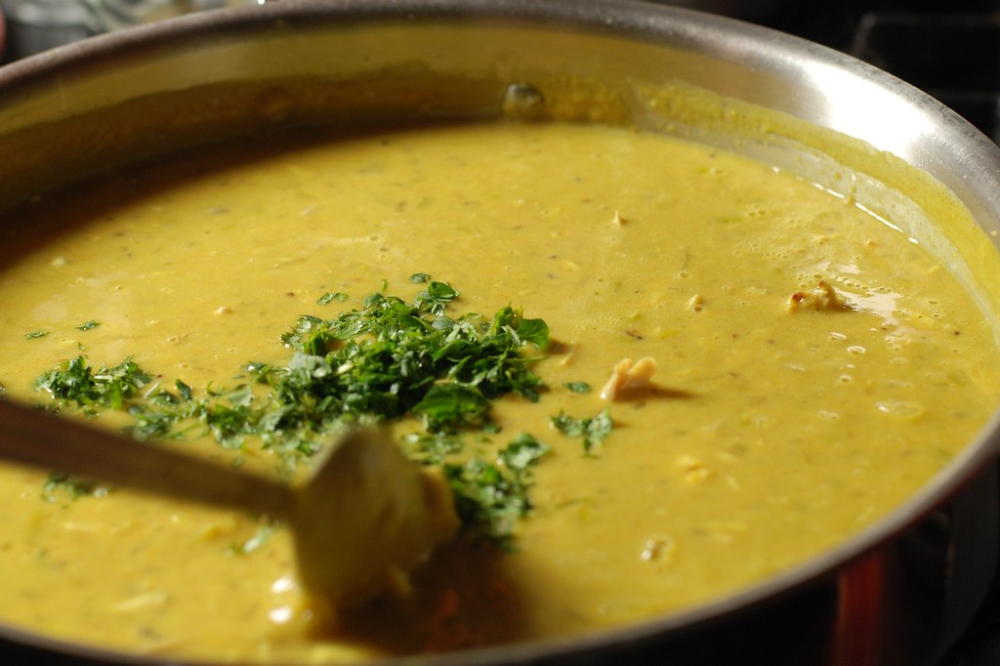

Home
Mullygatawny soup recipe

Ingredients
- ½ cup chopped onion
- 2 stalks celery, chopped
- 1 carrot, diced
- ¼ cup butter
- 1 ½ tablespoons all-purpose flour
- 1 ½ teaspoons curry powder
- 4 cups chicken broth
- ½ apple, cored and chopped
- ¼ cup white rice
- 1 skinless, boneless chicken breast half - cut into cubes
- 1 pinch dried thyme
- Salt and ground black pepper to taste
- ½ cup heavy cream, heated
Steps
- Step 1: Gather all ingredients.
- Step 2: Melt butter in a large soup pot over medium heat. Add onions, celery, and carrot and sauté until soft, 5 to 7 minutes.
Add flour and curry, and cook 5 more minutes, stirring frequently.
- Step 3:Add chicken broth, mix well, and bring to a boil. Reduce heat and simmer for about 30 minutes. Add apple, rice, chicken,
thyme, salt, and pepper. Simmer until rice is tender, 15 to 20 minutes.
- Step 4: Just before serving, stir in hot cream.
- Step 5 : Serve and enjoy!